Git is a free and open source distributed version control system designed to handle everything from small to very large projects with speed and efficiency. The purpose of Git is to manage a project, or a set of files, as they change over time. Git stores this information in a data structure called a repository. A git repository contains, among other things, the following: A set of commit objects. A set of references to commit objects, called heads.In Fab Academy our all documentation are stored in a common folder in Git More about Git
Installing Git on Windows :
1. Download the Git installer: Go to the official Git website: https://git-scm.com/download/win
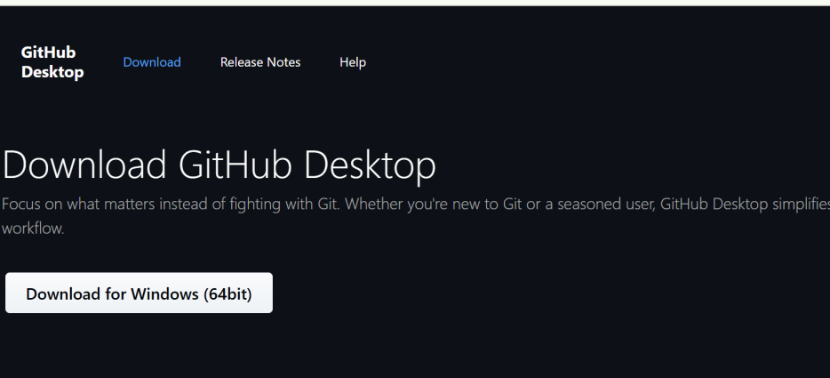
2. Run the installer: Once downloaded, double-click the .exe file to start the installation.
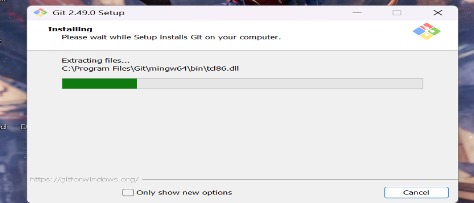
3. Follow the setup wizard:
o Information: Click "Next".
o Select Components: You can usually leave the default selections. Click "Next".
o Choose Default Editor: Select an editor you are comfortable with (e.g., VS Code, Notepad++). This will be used for Git commit messages. Click "Next".
o Adjusting your PATH environment: Choose "Git from the command line and also from 3rd-party software" (recommended). This allows you to use Git commands from any terminal. Click "Next".
o Choose HTTPS transport backend: Leave the default "Use the OpenSSL library". Click "Next".
o Configuring the line ending conversions: Choose "Checkout Windows-style, commit Unix-style line endings" (recommended for cross-platform projects). Click "Next".
o Configuring the terminal emulator to use with Git Bash: Choose "Use MinTTY (the default Git Bash terminal)". Click "Next".
o Choose the default behavior of git pull: Choose "Default (fast-forward or merge)". Click "Next".
o Choose a credential helper: Choose "Git Credential Manager Core". Click "Next".
o Configure extra options: You can keep the defaults. Click "Next".
o Configuring experimental options: You can skip experimental options unless you know what you are doing. Click "Install".
4. Finish installation: Once the installation is complete, click "Finish".
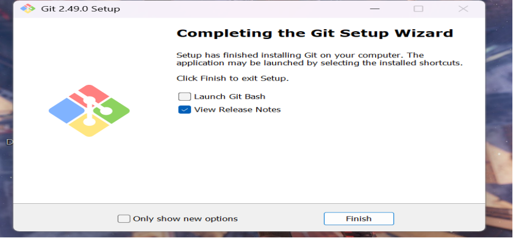
5. Verify installation: Open a new Command Prompt or Power Shell window and type:
git version
From this we can know the GitHub is successfully installed.
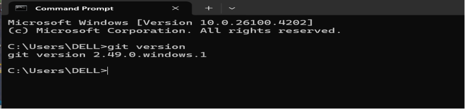
GETTING THE TOKEN : .
Open the profile in our GitHub and go to developer settings
On GitHub.com, click your profile picture > Settings > Developer settings.
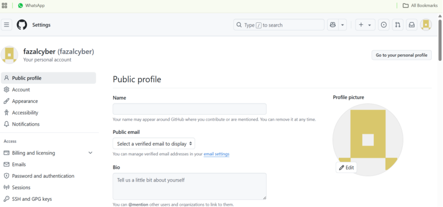
2. Move to personal access tokens
Correct. In Developer settings, select "Personal access tokens" from the left sidebar.
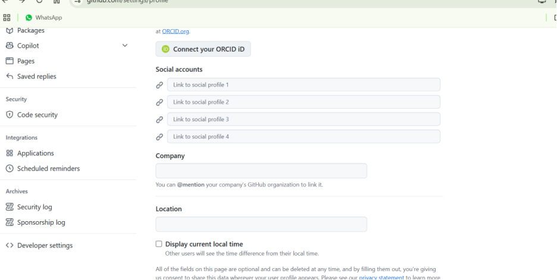
3. Then move to token classic
o For most general Git operations, "classic tokens" are still widely used and simpler to set up initially.
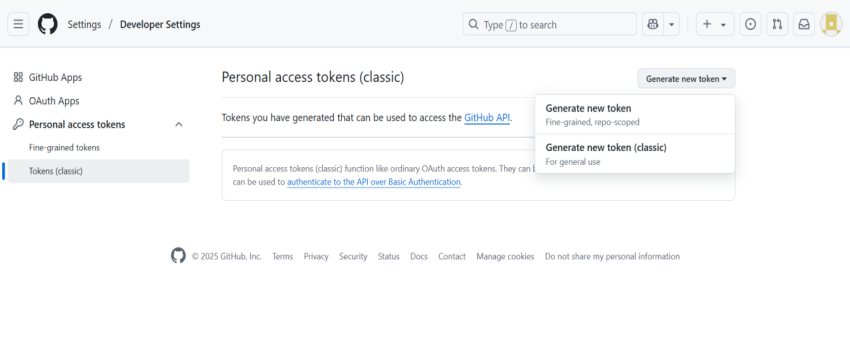
1. "and write a note and select the expire date and it generate the key"
o Correct.
§ Click "Generate new token (classic)".
§ Note: Give it a descriptive name (e.g., "My Laptop Git Access").
§ Expiration: Choose an expiration date (e.g., 30, 60, 90 days, or No expiration - though no expiration is generally not recommended for security).
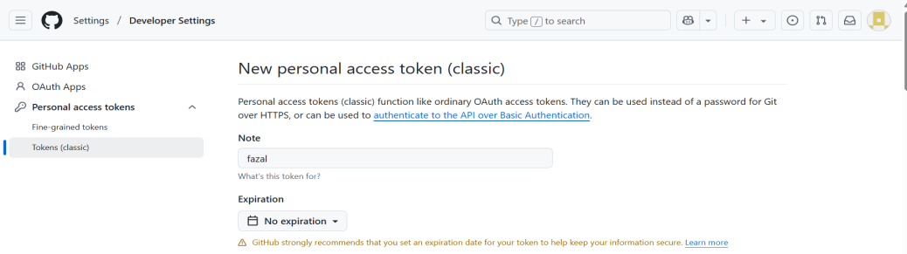
§ Scopes (Permissions): This is crucial! You need to select the appropriate
scopes for the operations you want to perform. For common Git operations (clone, pull, push), you'll typically need to check:
§ repo (full control of private repositories)
§ workflow (if you plan to interact with GitHub Actions workflows)
§ read:org (if you work with private organization repositories)
§ Click "Generate token".
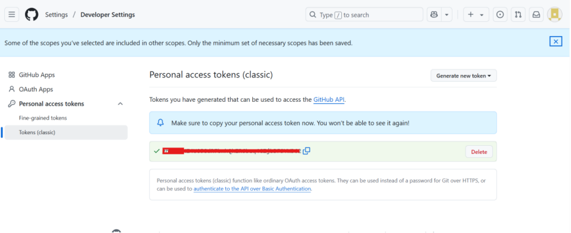
IMPORTANT: GitHub will display the token only once. Copy it immediately and save it in a secure place (like a password manager). If you lose it, you'll have to generate a new one.
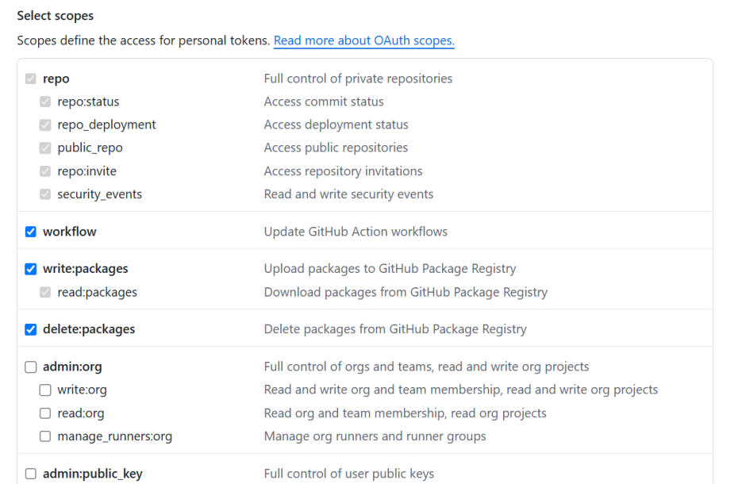
Connecting GitHub Account to Git Bash using Username, Email, and Token
Open Git Bash and configure your GitHub account details globally.
git config --global user.name "YourGitHubUsername"
git config --global user.email ”youremail@example.com”
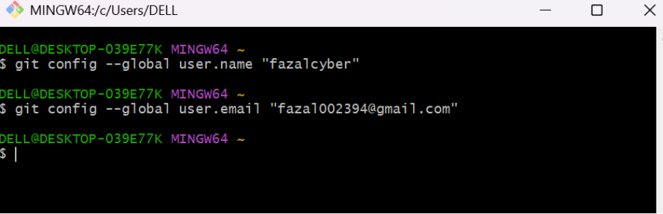
You should see:
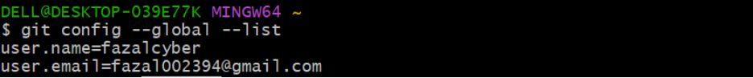
Open Git Bash and type
git config --global user.password “paste your token”
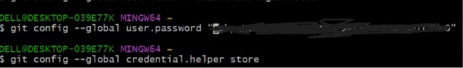
For storing the password, we type
git config --global credential.helper store
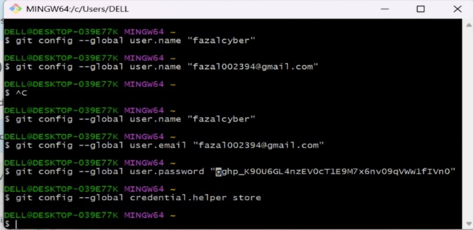
Therefore, we had successfully connected the git account to the git bash.